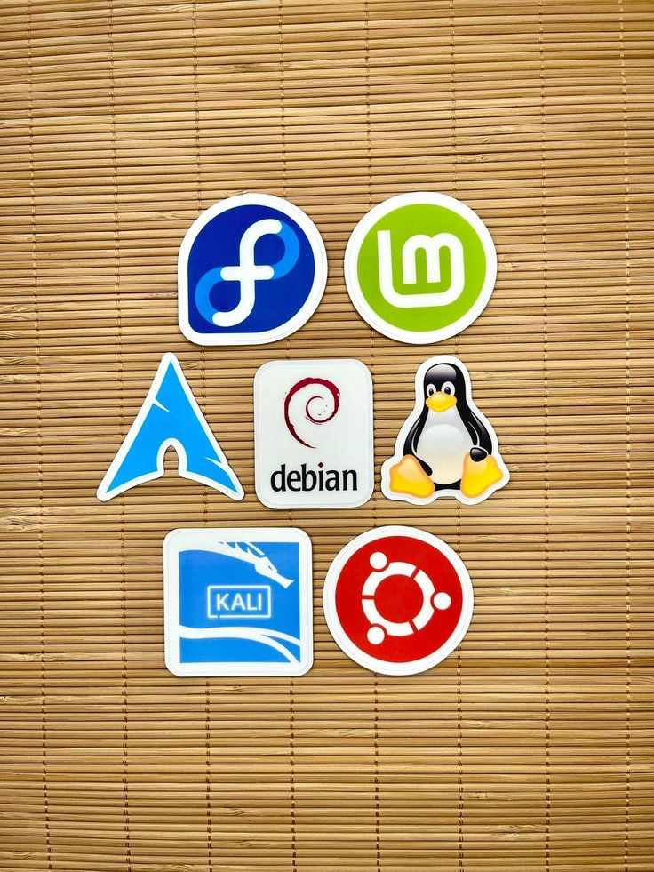

Pick your first Linux distro
This site is for people switching to Linux for the first time. Each page covers one of the main distros, who it is for, and how to install it.

This site is for people switching to Linux for the first time. Each page covers one of the main distros, who it is for, and how to install it.
